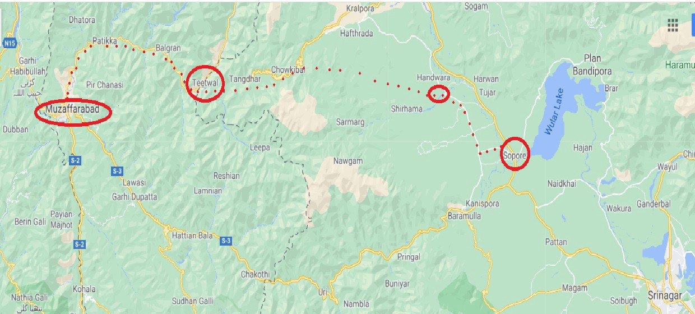

Kashmir - My Story and History
The banks of Nageen Lake, in Srinagar, Kashmir.
Kashmir.
Whenever I hear the name of Kashmir, a myriad of emotions fill me, seldom good. A little-known fact about
myself — I am part Kashmiri from my fathers’ side. What little Kashmiri blood I possess that courses through
my veins is blood that I am deeply proud of. Yet that same blood is more often than not, brought to a boil
when Kashmir’s name rings through my ears.
Whenever I hear the name of Kashmir, it is always about some new violence or atrocity committed against the
local population. Kashmir is the forgotten conflict, the territorial dispute the world chooses to forget.
Nevertheless, it is so much more than that.
Kashmir is a beautiful land, with a population immensely proud of their heritage and history. However, that
very history has been scarred by bloodshed — and ravaged by those wishing to subjugate the local population
for decades if not centuries.
I am of course, talking about the atrocities committed by the Dogra rulers of Kashmir prior to the partition
of the Indian subcontinent and ever since then, the Indian government.
There are at least 700,000 Indian soldiers in Kashmir, or 1 soldier for every 10 Kashmiris. It is the most
militarized zone in the word, more than Iraq, Afghanistan and Gaza. These soldiers are not there to hunt
terrorists, as the Indian government would like you to believe; they themselves are the perpetuators of
violence.
But alas, I am getting ahead of myself. Let me share with you part of my family’s history with Kashmir and why
the struggle for Kashmiri freedom weighs so heavily upon my heart.
My grandfather, Aga Ashiq Hussain, was born in Srinagar — what is now Indian-Occupied Kashmir — on the
1st of August 1913. He was born into a well-known religious family of Kashmir, and was only two years old when
his father, Maulana Fazal Ali Ansari, a revered religious scholar, died. Thereafter, he was brought up by his
maternal grandfather, Aga Abdul Karim and his uncle, Maulana Jawad Hussain Ansari — who had succeeded my
grandfather’s father as the President of Shia Association of the State of Jammu & Kashmir.
Dada [Dada (دادا) is the Urdu word for your father’s father] was groomed in a very unique religious and
political environment, and this was not lost upon him. He studied Law from Lucknow University in April 1937
and upon returning home, he started his legal practice in Srinagar. After a couple of years, he appeared in
the competitive examination and was selected for the judicial services of the State. He was appointed as the
Munsif (Judge) and was posted in various places in both Kashmir as well as Jammu province. One of his early
posting was at Bhimber in District Mirpur, a district that, as the fate would have it, not only became his
second home but also his eternal resting place.
Dada was posted to Sopore in 1944. During this time, movement for independence from the British Empire was at
its peak and he, despite the official position, could not be kept from making every possible contribution
towards the movement.
In the same year, during a convention of the National Conference held at Sopore, an unsuccessful attempt was
made to ambush Pandit Jawahar Lal Nehru — the future first Prime Minister of India — who had come to attend
the convention. Three young freedom fighters were charged with the alleged crime and brought to my
grandfathers’ court for trial in the full glare of a hostile Indian press.
Dada acquitted all three boys for lack of sufficient evidence, and was branded as an anti-Indian officer by
the Indian press.
It was not long before 1947 finally arrived — and with it, the independence of Pakistan and its’ split from
the rest of India. Soon after independence, Liaquat Ali Khan — the first Prime Minister of Pakistan — appealed
to the nation to help the millions of refugees entering Pakistan. Dada, along with the local leaders of the
Muslim Conference, went door to door in Sopore to collect cash and kind to be delivered to D.C. Rawalpindi for
the benefit of the refugee population.
However, his real test was soon to come — and the future of Kashmir was still unknown.
You see, when Pakistan and India gained their independence from the British Empire in 1947, the British
leadership gave the rulers of each “Princely State” the right to choose to join the dominions of either
Pakistan or India or declare their own independence entirely. The decision on which country to secede to was
to be based on the geographical borders and the religious population of the Princely States. To summarize,
Muslim majority states were expected to join Pakistan whereas Hindu or Sikh majority states were expected to
join India. However, some provinces became contentious issues between the two newly formed states due to the
disparity in religion between the rulers and subjects of said states. Kashmir was such a state with 77% of
Kashmir being Muslim while the ruler was a Hindu Maharaja.
The Maharaja of Kashmir, Hari Singh, faced with making such a critical choice, chose to play the idle ruler;
he waited for the conditions for Kashmiri Independence to present themselves, which they never did.
Instead— he decided to massacre the local Muslim population. Roughly, 237,000 Muslims were
systematically exterminated in a matter of weeks in October 1947.
Now that you are aware of what was going on in the background — back to my grandfather.
When the freedom fighters and tribal lashkars entered the valley on 22nd October 1947, Dada had to decide
between his office with all the privileges it held and the struggle for freedom. Given the man he was, he
could but make only one choice. He was in the forefront of the people of Sopore who welcomed the freedom
fighters and took over the administration of the tehsil on behalf of the freedom forces.
My grandfather was declared a traitor and enemy agent (Agent of Pakistan) by the Dogra government. They
issued orders to confiscate all his lands and assets.
Oh, and they put a dead or alive bounty on his head.
Yes, you read that correctly.
Dada was almost killed for Kashmir, and I am certain that he was prepared to die for it.
I will never forget this fact.
On 30th October 1947 the Indian Army landed in the valley and launched attacks on Baramula and the areas
surrounding Sopore. By this time, the tribal lashkars had deserted and run back to Muzaffarabad. With a bounty
on his head, and all main roads blocked, Dada left Sopore on a horse and took smaller side roads to Handwara.
From Handwara he took small trails, traversed mountains and small rivers and crossed over to Azad Kashmir —
what is now the Pakistani-side of Kashmir- from Teetwal in the Neelum Valley. He finally reached Muzaffarabad
— some 160 km away — in the middle of November 1947, leaving his mother, siblings and belongings behind in
the occupied Kashmir.

The journey from Sopore to Muzaffarabad. My grandfather had to traverse ~160 kilometers with a
bounty on his head.
So yeah, that’s a little glimpse into my family’s history with Kashmir.
As for my grandfather? He settled in the Pakistani side of Kashmir — what we call “Azad Kashmir” [Literally
“Free Kashmir”]. He managed to visit his family on the Indian side some ten years after the aforementioned
events, but could not go back to his home or his family permanently. Instead, Dada gave his all to the
Pakistani side of Kashmir — he was a Kashmiri through and through.
When he arrived in Muzaffarabad, the newly constituted Azad Kashmir Government was forming a rudimentary
administration. He was appointed as the first Deputy Commissioner of Muzaffarabad, a post that he held till
1949. During the posting, he tried his best to serve the people and the government of a war-torn area — but
was soon disillusioned by the attitude of people at the helm of affairs. He sent in his resignation from the
civil service and decided to move to Mirpur, Azad Kashmir to start his practice in law. Dada soon
established a respectable place in the legal community of the small town, which was ever to remain his home.
My grandfather gave everything he had to Kashmir, and knowing his history — my family’s history — makes the
current events in Indian-occupied Kashmir that much more gut wrenching to me. From one oppressive regime to
another, Kashmir is still suffering;
Since 1989, Indian forces have killed an estimated 70,000–100,000 Kashmiri civilians in
Indian-administered Kashmir [according to the Jammu and Kashmir Coalition of Civil Society
(Genocidewatch.com, 2019)]. The reason for that ambiguity in the true figure of this number is due to the
fact that many civilians are buried in unmarked mass graves — the true number of those killed is likely
even greater than these figures. Aside from the deaths, rape is used as a tool to suppress the local
population — more than 11,100 women have been raped by Indian forces since 1989 and 49% of the population
suffers from PTSD.
This is the Palestine you know nothing about. Welcome to the land of my forefathers.
One would think that a disputed territory between two nuclear armed nations would garner more attention —
at least some — from the nations of the world, but apparently not.
So why aren’t we talking more about this? Why isn’t Kashmir at the forefront of the issues of the
international community?
Well first of all, the Indian government has tried to keep the issue silent. On August 5th, 2019 the
Government of India imposed a complete communications blackout in Kashmir, violating their human rights and
autonomy in the wake of the passing of a resolution (Article 370) that denies Kashmiris the right to
self-determination. This blackout lasted until 10th February 2021. For 1 year, 6 months and 9 days Kashmiris
had little to no access to internet while the Indian government was silently committing a genocide. The
internationalization of the issue is something the government of India has tried to avoid, which is why
awareness of the plight of Kashmiris needs to be raised. The Office of the UN High Commissioner for Human
Rights (OHCHR) published a list of violations committed by the regime in Kashmir, which the Indian
Government denies. Just search for “Human Rights Report on Kashmir.”
Its…you don’t want to believe the horrors you find.
The list of human rights violations is all-encompassing and disheartening. Mass rape, blinding by pellet
guns, torture, kidnappings, forced evictions and more — the list seemingly never ends. Furthermore, there is
the threat of demographic changes, which is India’s goal in Kashmir. The government wishes to alter
Kashmir’s status as India’s sole Muslim majority state. This should be no surprise to anyone familiar with
the India’s ruling party — the BJP. Interestingly enough, the BJP is an offshoot of the RSS, a
Hindu-nationalist movement inspired by the fascist movements of Mussolini and Hitler. The RSS is the same
organization that assassinated Mahatma Gandhi and now they are effectively in charge of India.
The irony is incredulous!
The Indian government has been taking a page out of the Israeli playbook and using tactics similar to those
used on Palestinians to subjugate and eradicate Kashmiris.
So what can I do? I do not know yet, but I do know this:
It is my duty, not only as a Kashmiri, but also as a human — to raise the banner of the oppressed people
of Kashmir.
My blood is intertwined with the land of my grandfather, and that is why I will always fight for Kashmiri
freedom until my dying breath.
Consider this piece of writing…a start.
Free Kashmir.
-Arsalan Ali Aga
9th June, 2021
Good places to learn more about Kashmir:
Stand With Kashmir
instagram.com/standwkashmir/
Free Press Kashmir
genocidewatch.com/single-post/2019/08/15/Genocide-Alert-for-Kashmir-India